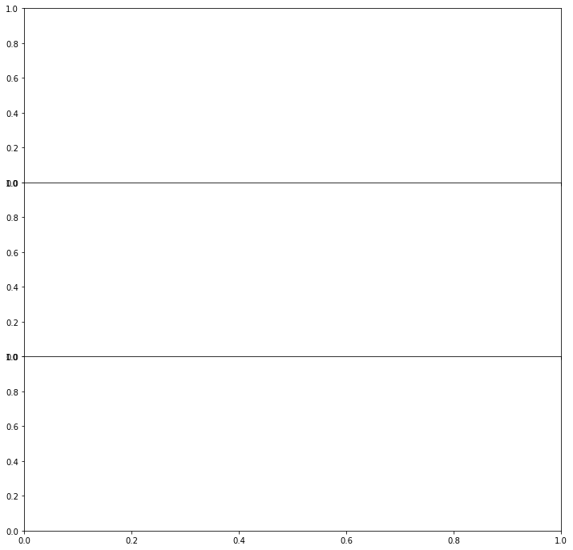

SPheno example
[1]:
import hepi
print(hepi.__version__)
import smpl
import numpy as np
import hepi.resummino as rs
import hepi.util as util
import hepi.spheno as sp
import matplotlib.pyplot as plt
rs.set_path("~/git/resummino_ug_to_UX_vNLO")
sp.set_path("~/git/SPheno-3.3.8")
print (rs.get_path())
print (sp.get_path())
0.1.4.15+dirty
~/git/resummino_ug_to_UX_vNLO/
~/git/SPheno-3.3.8/
[2]:
for sq in [2000002,1000002]:
fig, axs = plt.subplots(3, 1, figsize=(12, 12), sharex=True)
fig.subplots_adjust(hspace=0)
for pdf,nlopdf in [("CT14lo","CT14lo")]:
li = [hepi.Input(hepi.Order.LO,13000,sq,1000022,"LesHouches.in",pdf,nlopdf,1., 1.,id="test")]
li=hepi.slha_scan_rel(li,lambda r : [["EXTPAR",1,510],["EXTPAR",2,r]],np.linspace(470.,530.,16))
sp.run(li)
dl = rs.run(li,False,False)
for p in [1000022,1000023,1000025,1000035]:
hepi.slha_plot(li,["EXTPAR",2],["MASS",p],axes=axs[0],logy=True,xaxis="$M_2$ [GeV]",yaxis="$M$",label="$"+hepi.util.get_name(p)+"$",tight=False)
for nm1 in [1]:
for nm2 in [1,2,3,4]:
hepi.slha_plot(li,["EXTPAR",2],["NMIX",(nm1,nm2)],fmt="-",interpolate=False,xaxis="$M_2$ [GeV]",yaxis="Mixing",logy=False,axes=axs[1],label="$"+"N_{"+ str(nm1)+ str(nm2)+"}$",tight=False)
hepi.vplot(hepi.slha_data(li,["EXTPAR",2]),dl["lo"],plot_data=True,axes=axs[2],xaxis="$M_2$ [GeV]",yaxis= "$\sigma$ [pb]",tight=False,label="$\sigma_{lo}$")
---------------------------------------------------------------------------
FileNotFoundError Traceback (most recent call last)
/tmp/ipykernel_12727/649120515.py in <module>
3 fig.subplots_adjust(hspace=0)
4 for pdf,nlopdf in [("CT14lo","CT14lo")]:
----> 5 li = [hepi.Input(hepi.Order.LO,13000,sq,1000022,"LesHouches.in",pdf,nlopdf,1., 1.,id="test")]
6 li=hepi.slha_scan_rel(li,lambda r : [["EXTPAR",1,510],["EXTPAR",2,r]],np.linspace(470.,530.,16))
7 sp.run(li)
~/.local/lib/python3.8/site-packages/hepi/input.py in __init__(self, order, energy, particle1, particle2, slha, pdf_lo, pdf_nlo, mu_f, mu_r, pdfset_lo, pdfset_nlo, precision, max_iters, invariant_mass, result, pt, id, model_path, update)
151 self.model_path = model_path
152 if update:
--> 153 update_slha(self)
154
155 def update_slha( i:Input ):
~/.local/lib/python3.8/site-packages/hepi/input.py in update_slha(i)
161
162 """
--> 163 b = pyslha.read(get_input_dir() + i.slha,ignorenomass=True)
164 try:
165 i.mu = (abs(b.blocks["MASS"][abs(i.particle1)]) +
~/.local/lib/python3.8/site-packages/pyslha.py in read(spcfile, **kwargs)
1546 Other keyword parameters are passed to readSLHA/readISAWIG.
1547 """
-> 1548 txt = _read(spcfile)
1549 if type(spcfile) is str and spcfile.endswith(".isa"):
1550 return readISAWIG(txt, **kwargs)
~/.local/lib/python3.8/site-packages/pyslha.py in _read(f)
235 return sys.stdin.read()
236 else:
--> 237 with open(f, "r") as ff:
238 return ff.read()
239 else:
FileNotFoundError: [Errno 2] No such file or directory: './input/LesHouches.in'

[ ]:
for sq in [2000002,1000002]:
for pdf,nlopdf in [("CT14lo","CT14lo")]:
li = [hepi.Input(hepi.Order.LO,13000,sq,1000022,"LesHouches.in",pdf,nlopdf,1., 1.,id="test")]
#li=hepi.slha_scan_rel(li,lambda r : [["EXTPAR",1,r],["EXTPAR",2,r]],np.linspace(500.,1500.,16*2))
li=hepi.slha_scan(li,"EXTPAR",1,np.linspace(500.,1500.,16))
li=hepi.slha_scan(li,"EXTPAR",2,np.linspace(500.,1500.,16))
sp.run(li)
dl = rs.run(li,False,False)
for nm1 in [1]:
for nm2 in [1,2]:
print(nm2)
hepi.map_vplot(hepi.slha_data(li,["EXTPAR",1]),hepi.slha_data(li,["EXTPAR",2]),
hepi.slha_data(li,["NMIX",(nm1,nm2)]),logz=False,xaxis="$M_1$",yaxis="$M_2$",zaxis="Mixing")
hepi.map_vplot(hepi.slha_data(li,["EXTPAR",1]),hepi.slha_data(li,["EXTPAR",2]),dl["lo"],xaxis="$M_1$",yaxis="$M_2$",zaxis="$\sigma_{lo}$")
[ ]:
dll = {}
sqs=[2000002,1000002]
for sq in sqs:
for pdf,nlopdf in [("CT14lo","CT14lo")]:
li = [hepi.Input(hepi.Order.LO,13000,sq,1000022,"LesHouches.in",pdf,nlopdf,1., 1.,id="test")]
#li=hepi.slha_scan_rel(li,lambda r : [["EXTPAR",1,r],["EXTPAR",2,r]],np.linspace(500.,1500.,16*2))
li=hepi.slha_scan(li,"EXTPAR",1,np.linspace(475.,525.,10+1))
li=hepi.slha_scan(li,"EXTPAR",2,np.linspace(450.,500.,10+1))
sp.run(li)
dl = rs.run(li,False,False)
for nm1 in [1]:
for nm2 in [1,2]:
print(nm2)
hepi.map_vplot(hepi.slha_data(li,["EXTPAR",1]),hepi.slha_data(li,["EXTPAR",2]),
hepi.slha_data(li,["NMIX",(nm1,nm2)]),logz=False,xaxis="$M_1$",yaxis="$M_2$",zaxis="Mixing")
hepi.map_vplot(hepi.slha_data(li,["EXTPAR",1]),hepi.slha_data(li,["EXTPAR",2]),
dl["lo"],xaxis="$M_1$",yaxis="$M_2$",zaxis="$\sigma_{lo}$")
hepi.map_vplot(hepi.slha_data(li,["EXTPAR",1]),hepi.slha_data(li,["EXTPAR",2]),
hepi.slha_data(li,["MASS",1000022]),xaxis="$M_1$",yaxis="$M_2$",zaxis="$MX$")
dll[sq] = dl
hepi.map_vplot(hepi.slha_data(li,["EXTPAR",1]),hepi.slha_data(li,["EXTPAR",2]),
dll[sqs[0]]["lo"]+dll[sqs[1]]["lo"],xaxis="$M_1$",yaxis="$M_2$",zaxis="$\sigma_{lo+lo}$")
[ ]: